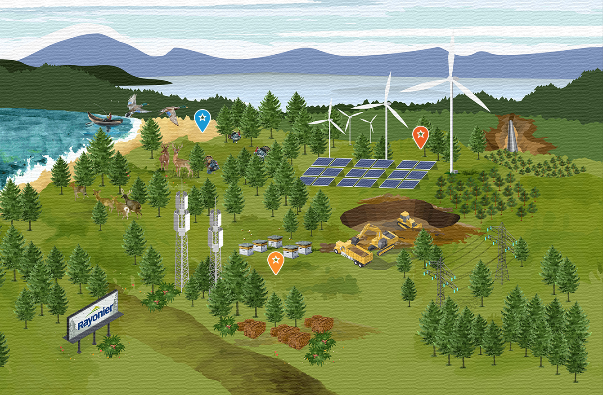
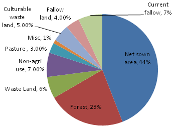
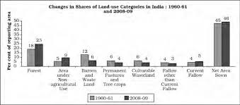

'What are Land Resources?'
 Land is a naturally occurring finite resource. It provides the base for survival of living beings. It holds everything that constitutes terrestrial ecosystems. Increased demand on land in modern times due to the rise in human population and resultant activities has resulted in degradation of land quality and quantity, decline in crop production, and competition for land.Land Resources refer to a delineable area of the earth's terrestrial surface, encompassing all attributes of the biosphere immediately above or below this surface, including those of the near-surface climate, the soil and terrain forms, the surface hydrology (including shallow lakes, rivers, marshes and swamps), the near-surface sedimentary layers and associated groundwater and geo-hydrological reserve, the plant and animal populations, the human settlement pattern and physical results of past and present human activity (terracing, water storage or drainage structures, roads, buildings, etc.)
Forests are the dominant terrestrial ecosystem of Earth, and are distributed across the globe. Forests account for 75% of the gross primary productivity of the Earth's biosphere, and contains 80% of the Earth's plant biomass.
A forest constitutes many components that can be broadly divided into two categories that are biotic (living) and abiotic (non-living) components. Forest is made up of many layers such as forest floor, understory, canopy, and emergent layer.
The following demographs demonstrates the Land Resources:
 
 by Ananay Gupta © All Rights Reserved 2021
by Ananay Gupta © All Rights Reserved 2021